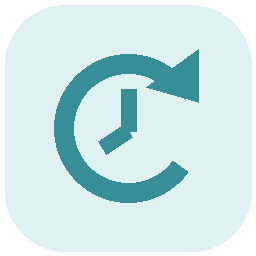

预告、确认与额度节奏，放在一起看。
本机接口报告：当前不允许常规使用，请查看额度明细。
假设节奏以最近已核对的全局重置为起点
拖动左侧把手可调整横条顺序
系统勿扰模式可能将通知收进通知中心。
自动读取本机 Codex 当前账户的剩余比例与重置时间。
默认 3 天。以最近已核对的全局重置为起点，到期停在 100%，等待实际重置。
正文和更小的文字同步调整，保留字号层次；大号时间、额度和预告数字保持原尺寸。
实际消耗来自本机 Codex 额度接口；均匀节奏按接口返回的周期长度及重置时间计算。全局重置公告不会覆盖个人周期。